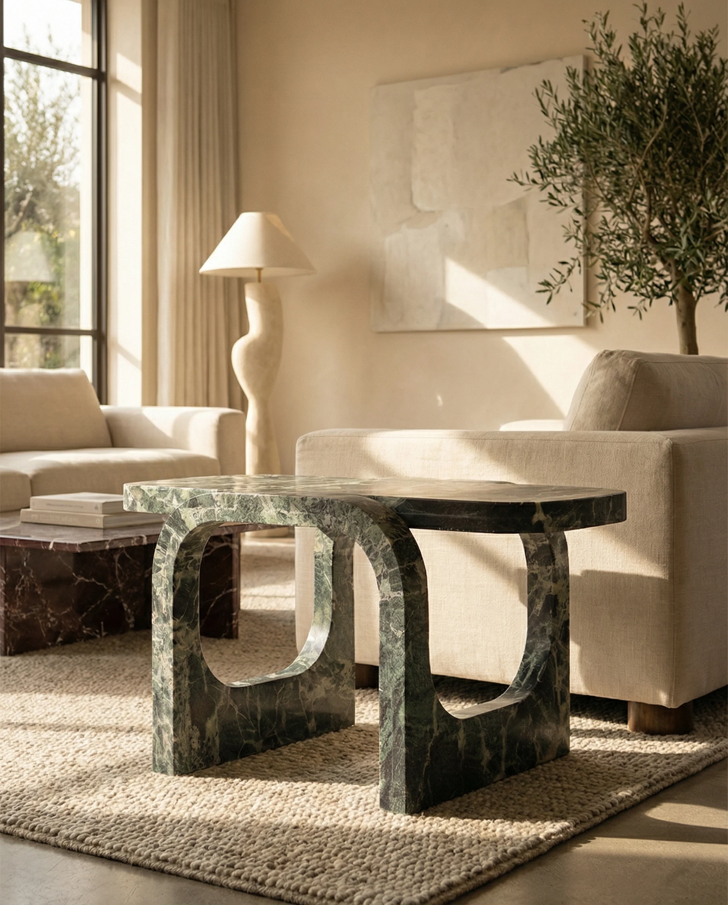
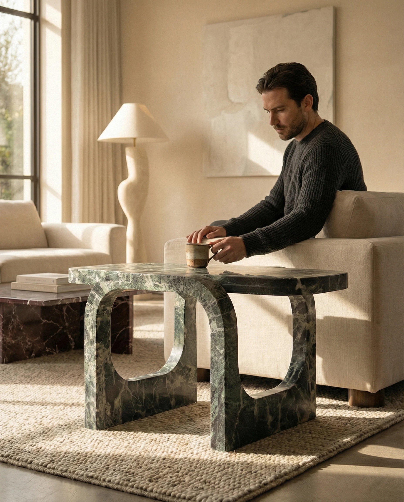
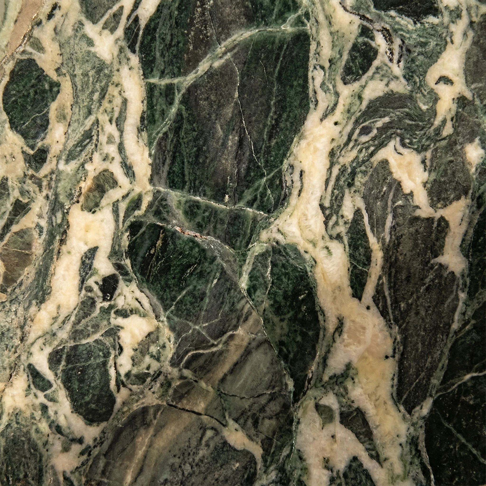
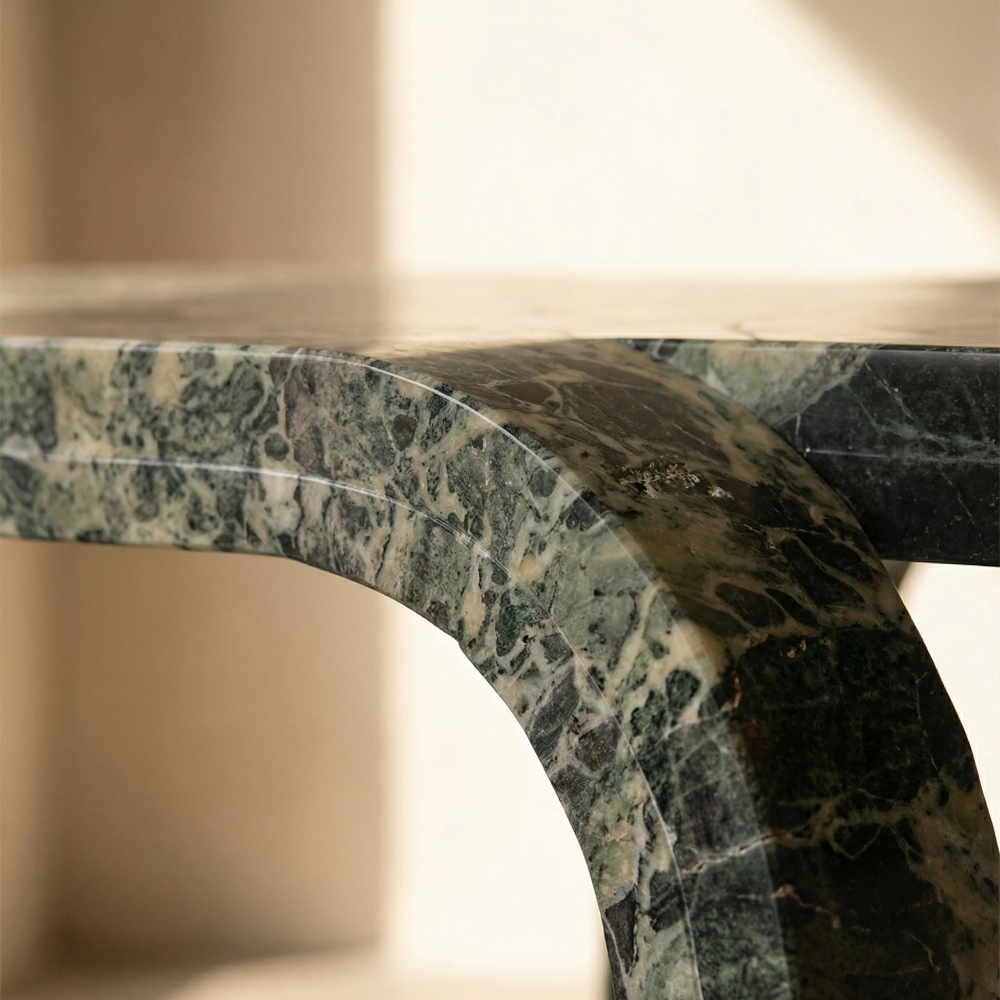
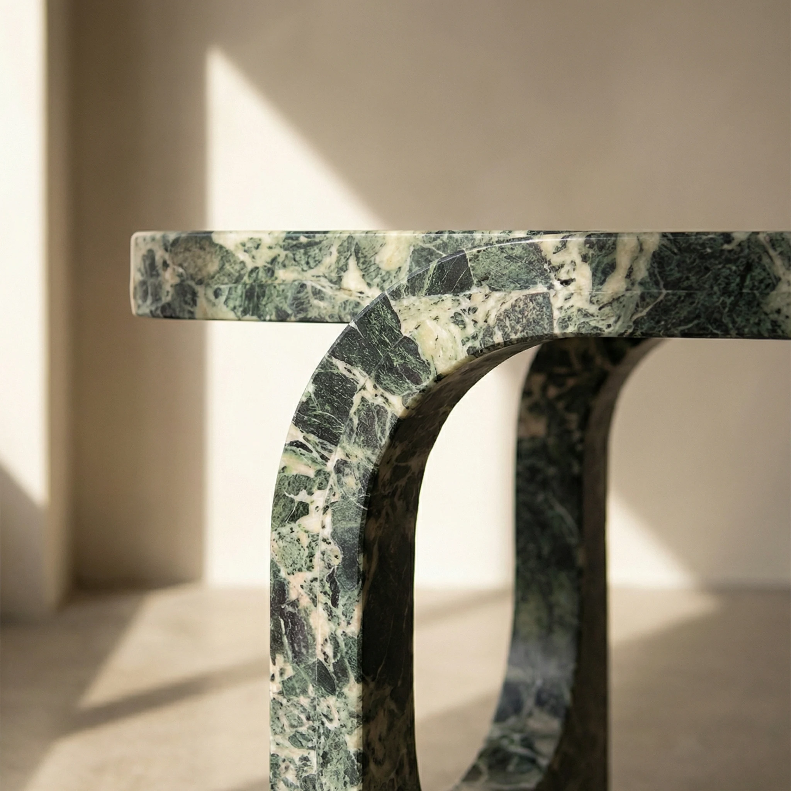
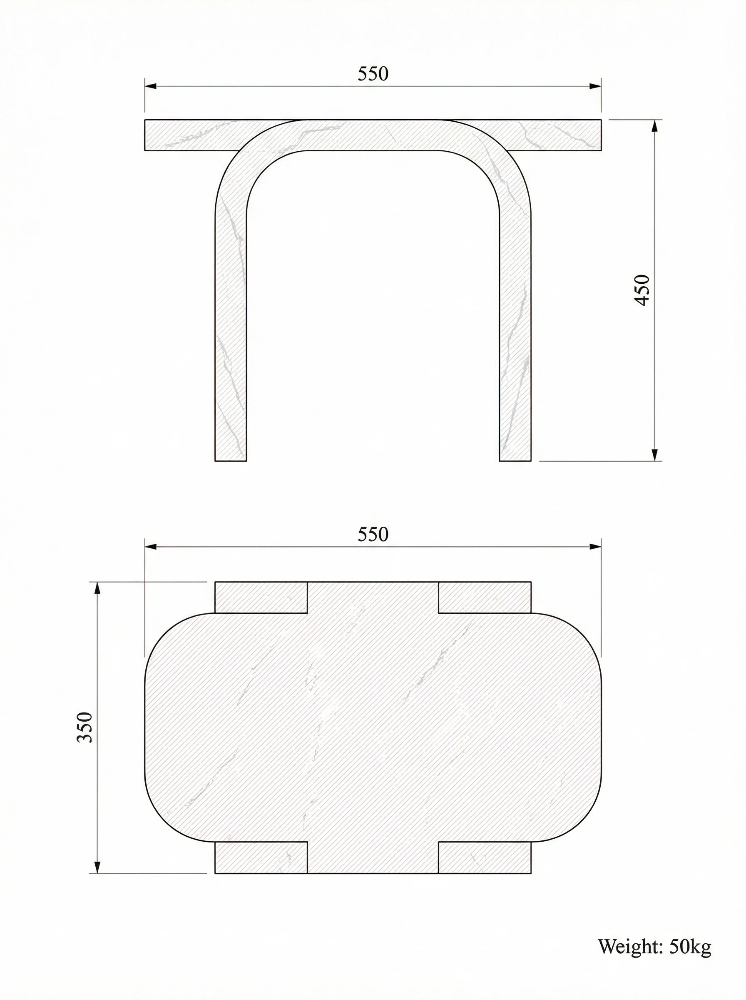
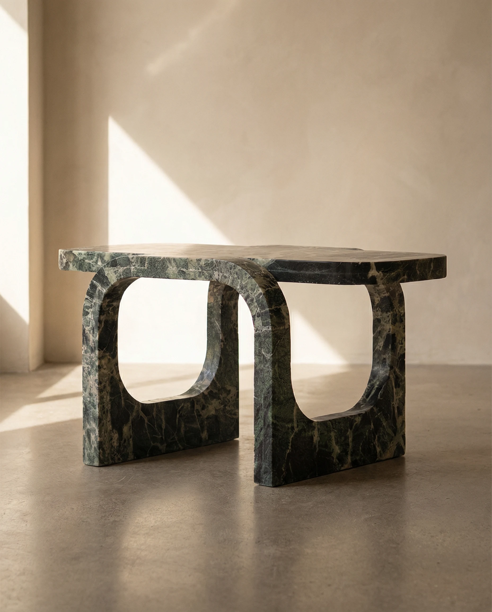

Side Tables
marble side table
The impossible made permanent. Cut & Fold presents marble in the posture of folded sheet — a central crease dividing two planes that meet at an angle, the whole piece balanced on that single edge as though the stone had just been set down mid-gesture.
Request a Quote




The crease is not decorative. It is the structural logic of the piece — the line from which both planes extend, the point at which compression becomes support. To achieve it in marble requires removing material with extraordinary precision: too deep, and the stone weakens; too shallow, and the gesture disappears. The crease of each Cut & Fold is hand-finished to hold this balance.
Commission Yours →Because the Cut & Fold is carved from a single block, the veining runs continuously across both planes — it crosses the crease without interruption, mapping the same geological moment onto two different angles. The orientation of veining relative to the crease is unique to each stone selected. We take considerable care in the quarry selection to ensure the veining direction adds to, rather than fights, the geometry of the fold.
Discover Our Craft →
The Cut & Fold is offered in six stone selections with a honed matte finish as standard. Stone choice dramatically affects the reading of the form — lighter stones render the fold as a delicate shadow; darker stones make it more pronounced, more architectural. We are happy to discuss options during the inquiry process.
Calacatta Viola
 Calacatta Viola
Calacatta Viola
 Fendy Grey
Fendy Grey
 Silver Travertine
Silver Travertine
 Beige Travertine
Beige Travertine
 Rosso Levanto
Rosso Levanto
 Verde Patricia
Verde Patricia

| Dimensions | 55 × 35 × 45 cm |
| Weight | Approx. 37 kg |
| Construction | Monolithic single block, integral marble base |
| Finish | Honed matte (standard) |
| Stone options | Calacatta Viola, Fendy Grey, Silver Travertine, Beige Travertine, Rosso Levanto, Verde Patricia |
| Custom Sizing | Available on request |
The crease is the result of precision CNC machining followed by extensive hand finishing. The two planes are carved from a single block — there is no join, no seam. The crease angle is established by the design, then refined by hand to ensure the shadow it casts at the fold reads correctly from all angles. The depth and sharpness of the crease is calibrated per stone type, as different marbles respond differently to fine edge work.
Yes. The Cut & Fold is a functional side table, not a sculpture. Its top surface is fully usable — flat, stable, and appropriately sized for a glass, book, or lamp. The honed finish is practical and forgiving of daily contact. As with all marble surfaces, acidic liquids should be wiped promptly and coasters are recommended for drinks, but the piece is designed for living environments.
We cannot precisely specify veining — marble is a natural material and its pattern is determined by the geology of the block. However, we carefully select blocks for each commission, and can work to ensure the veining direction runs across the crease (emphasising the fold) rather than parallel to it. We share block photographs before cutting begins so you can approve the selection.
The Cut & Fold is delivered in a custom-built protective crate by our specialist logistics partners. White-glove delivery includes placement and a final inspection at your location. We do not use standard courier services for any Tiba Stone marble piece — all logistics are co-ordinated directly by the atelier to ensure the piece arrives without risk to the crease or surface.

Every Cut & Fold is made to order. Inquire to begin a conversation about stone selection, dimensions, and delivery.